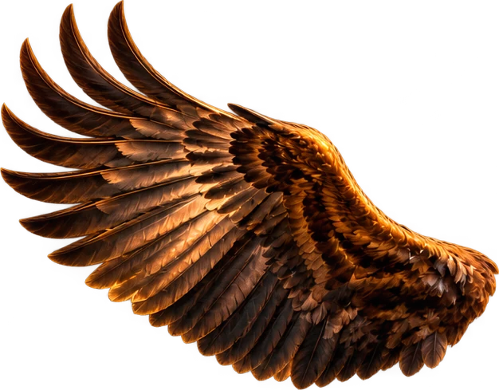
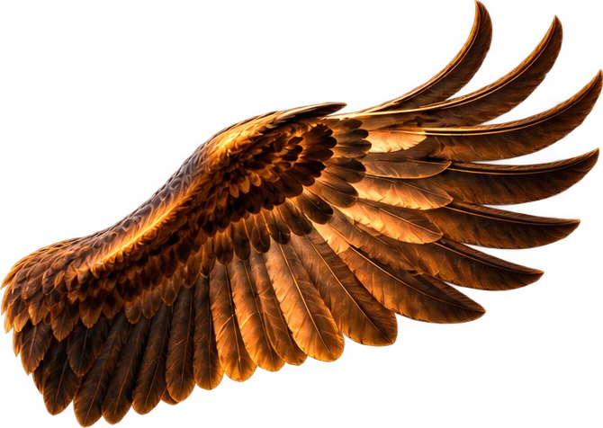
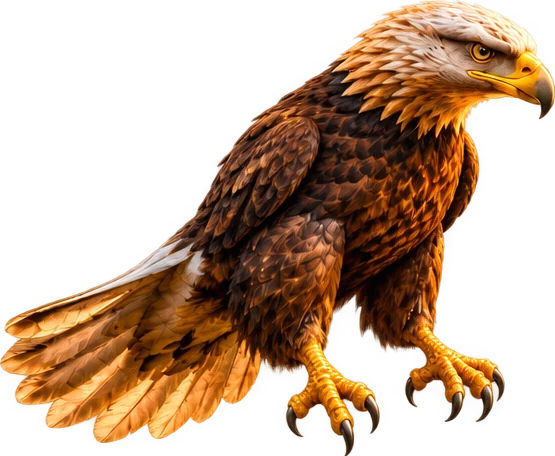
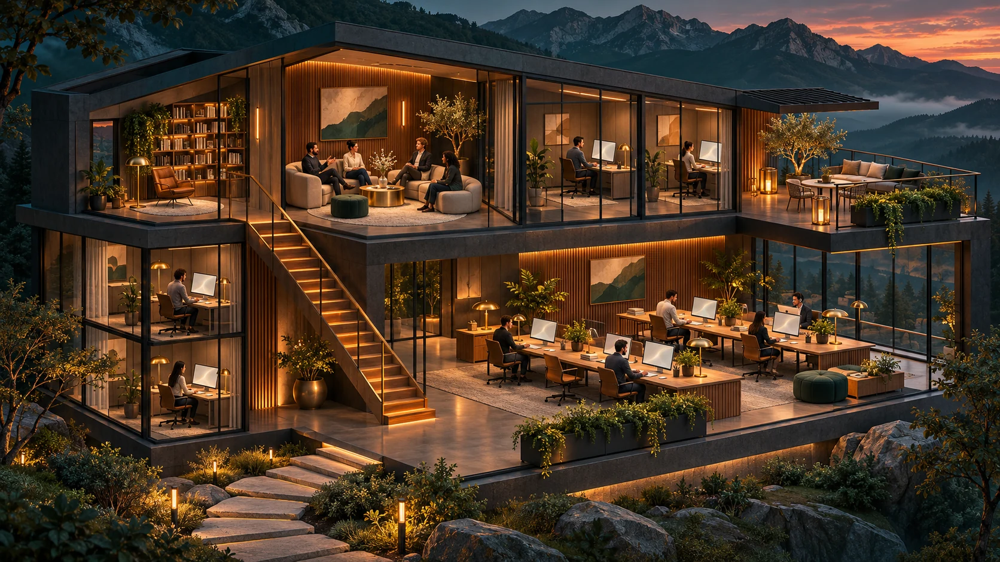
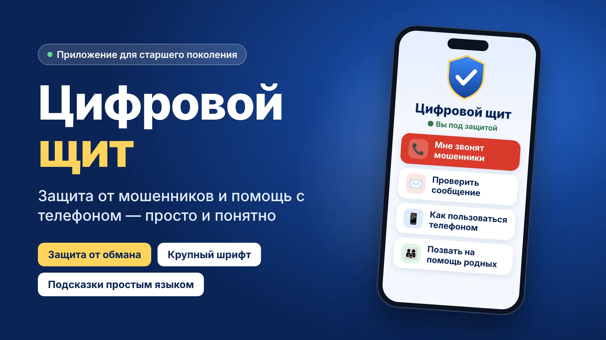
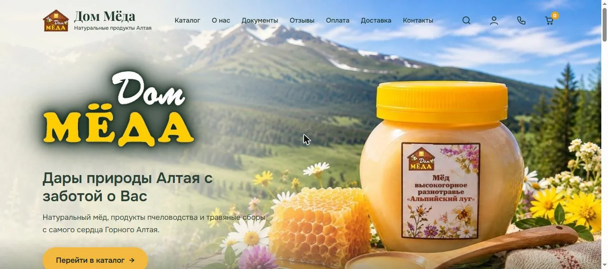
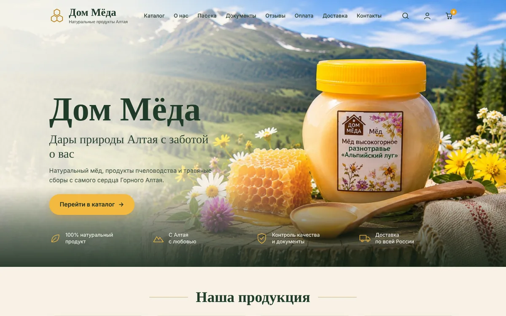
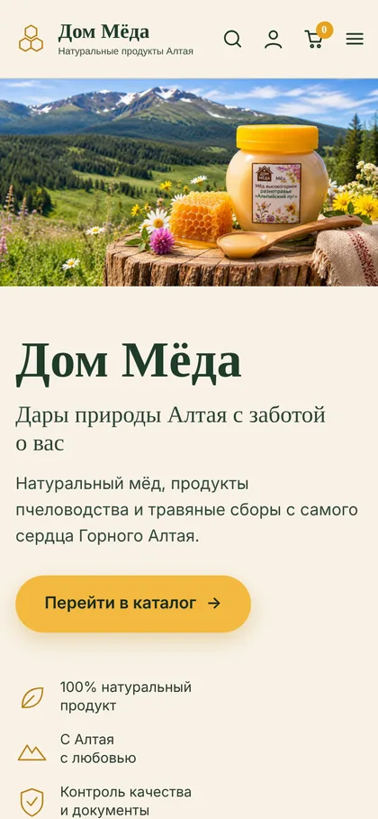
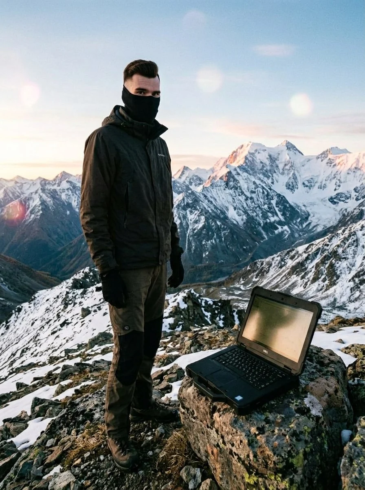

Сайты и лендинги
Представить компанию, рассказать о продукте и помочь клиенту оставить заявку.
Лендинг от 30 000 ₽↗



ЦИФРОВЫЕ РЕШЕНИЯ ДЛЯ БИЗНЕСА
Лендинги, сайты для бизнеса, Telegram-боты и цифровые сервисы. От идеи и дизайна до запуска и поддержки.
01 / УСЛУГИ
Начинаем с задачи. Подбираем формат,
согласовываем объём и собираем решение.
Проектируем структуру, дизайн и функции под вашу задачу. Если у вас есть старый сайт, используем его как источник материалов для нового проекта. Доработка чужого сайта в эти тарифы не входит.
Представить компанию, рассказать о продукте и помочь клиенту оставить заявку.
Отвечать на вопросы, принимать заявки и автоматизировать ежедневные процессы.
Интерактивные продукты для браузера, социальных сетей и игровых платформ.
Начальные цены. Итоговая стоимость зависит от задачи и согласуется до старта.
ПОПРОБУЙТЕ СВОЮ ИДЕЮ
Выберите настроение, цвет и блоки.
Эскиз меняется сразу — его можно добавить в заявку.
Ваш подход, ваши преимущества и понятный следующий шаг для клиента.
Обсудить задачу ↗Здесь будет ваша история, команда и принципы работы.
Это демонстрационный эскиз. Названия и блоки используются для выбора направления дизайна.
02 / ПРОЕКТЫ
Игра «три в ряд», уровни и обустройство дачи. Результат: игра создана, Android-версия в RuStore.
О проекте ↗ Скачать в RuStore ↗Каталог снастей, корзина и передача заказа в Telegram. Результат: путь от выбора товара до обращения к продавцу.
О проекте ↗Одностраничный сайт: знакомство, спецпредложения и кнопка «Консультация» в Telegram. Результат: ссылку можно отправлять новым клиентам.
Открыть сайт ↗Умная помощница: ответы на вопросы, изображения, работа с PDF и голосовыми сообщениями.
Открыть Ариадну в Telegram ↗
КОНЦЕПЦИЯ / Дом агентовКонцепция пространства ИИ-агентов: отдельные роли, общая работа и согласование результатов.
Демо покажу по запросу ↗Концепция интерактивного офиса: рабочие места, встречи и жизнь команды.
Демо покажу по запросу ↗
Приложение для старшего поколения. Подсказки о подозрительных звонках и сообщениях, помощь с телефоном и связь с родными. Проект в разработке.
Посмотреть превью ↗Ещё не опубликованоИнтернет-магазин алтайского мёда и продуктов пчеловодства: каталог, оплата, доставка по России. Сначала я показал заказчику макет-концепцию, затем собрал рабочий сайт.
Открыть dom-meda.com ↗Макет и сайт подробнее ↗


Проекты открываются в Telegram или на сайте. «Цифровой щит» представлен превью разработки.

ОБО МНЕ
Создаю сайты, Telegram-ботов, игры и цифровые сервисы. Сам обсуждаю задачу, разрабатываю решение и помогаю после запуска.
В портфолио — собственные продукты и проекты, которые можно посмотреть в работе. Перед началом согласуем результат, стоимость и этапы.
03 / ПОДХОД
Я Никита Гусев. Создаю сайты, ботов, HTML5-игры и веб-приложения. Решения, которые предлагаю, сначала проверяю на собственных проектах.
Мой GitHub ↗Что нужно бизнесу, какой результат ожидаем, какие сроки и бюджет.
Структура и первый макет. Вы видите направление до запуска разработки.
Разработка, проверка на разных экранах и публикация.
Код, доступы и инструкции остаются у вас. Обсуждаем дальнейшую поддержку.
04 / СТОИМОСТЬ
Стоимость зависит от функций, объёма контента
и интеграций. Сначала обсуждаем вашу задачу.
Для визитки, одной услуги или акции
от 30 000 ₽Для бизнеса, которому нужно подробно рассказать об услугах
от 45 000 ₽Для компании с несколькими услугами и разделами
от 70 000 ₽Это базовый состав пакетов. Тексты, платные изображения, админка, сложные интеграции и 3D-сцены оцениваются отдельно. Сроки считаем с момента, когда получены тексты и материалы. Правки сверх включённых кругов согласуем отдельно. Интернет-магазин — обычно 1–2 недели (по каталогу и числу страниц).
Примеры по срокам и объёму: чат-визитка врача (2–3 дня), Алтай-рыбалка (около недели), Дом мёда (1–2 недели, магазин и около десяти страниц).
ПРЕДВАРИТЕЛЬНЫЙ РАСЧЁТ
Предоплата 50% от согласованной суммы.
Ориентир предоплаты — 15 000 ₽.
Расчёт предварительный. Личные кабинеты, сложные боты и полноценное 3D требуют отдельной оценки. Подписки и инфраструктура оплачиваются отдельно.
Домен, хостинг и подписки сервисов не входят в разработку. Если выбираем конструктор, добавляется его подписка. Подход и все регулярные расходы согласуем до старта.
Тарифы Tilda на официальном сайте ↗Бот-визитка с меню и заявками
от 10 000 ₽Клиентские сценарии и интеграции
от 15 000 ₽Каталог, корзина и приём заказов
от 60 000 ₽Обновления и поддержка по согласованному объёму
2 000–10 000 ₽/мес.Магазины, игры, приложения и ИИ-сервисы
По задачеВОПРОСЫ И ОТВЕТЫ
Start решает одну задачу на небольшой странице. Business включает больше блоков и настройку заявок и аналитики. Сайт под ключ состоит из нескольких страниц и требует дополнительной работы над структурой, навигацией и контентом. Подробный состав указан в карточках тарифов.
Моя специализация — создание новых сайтов с нуля. Старый сайт можно использовать как источник текстов и материалов. Новую структуру и дизайн разрабатываем под актуальные задачи; перенос контента и адресов согласуем отдельно.
Количество страниц, подготовка текстов, админка, каталог, оплата, интеграции, сложная анимация и 3D. До старта составляем перечень работ. Калькулятор даёт первоначальный ориентир; окончательная смета формируется по заданию.
Эти расходы рассчитываются отдельно. До запуска согласуем платформу, тариф размещения и необходимые сервисы. Для конструктора учитываем его подписку, для сайта на коде — выбранный хостинг и используемые внешние сервисы.
Сначала согласуем структуру и первый макет — вы видите направление до запуска разработки. Правки в рамках тарифа вношу, пока результат не совпадёт с согласованным заданием. Оплата идёт двумя частями: 50% до начала и 50% после сдачи.
После согласования задачи и стоимости вносится предоплата 50%. Оставшиеся 50% оплачиваются после сдачи проекта.
Расскажите о бизнесе, задаче и желаемых сроках. Если есть тексты, фотографии, фирменный стиль или примеры сайтов — пришлите их. Состав необходимых материалов определим вместе.
Ориентир — 2 000–10 000 ₽ в месяц. Стоимость зависит от частоты обновлений и объёма поддержки. Перечень задач согласуем заранее. Новые разделы и сложные функции оцениваются отдельно.
После сдачи проекта передаю вам код, доступы и инструкции по работе с сайтом.
Количество этапов согласования и объём правок фиксируем перед началом. Если задача меняется в процессе, сначала обсуждаем влияние на стоимость и сроки.
Чат-визитка на одну страницу — 2–3 дня, небольшой магазин — около недели, сайт с каталогом и десятком страниц — 1–2 недели. Точный срок зависит от функций, объёма контента и интеграций; до начала работ согласуем этапы и дату сдачи.
ОТЗЫВЫ
Показываем только настоящие отзывы
с согласия авторов.
Первые отзывы появятся после завершения клиентских проектов. Мы не публикуем выдуманные отзывы.
ОБСУДИТЬ ПРОЕКТ
Несколько строк о задаче — и у нас уже есть основа для разговора.
Сейчас заявка открывается готовым сообщением в Telegram. Отправьте её в чате или по почте.
Написать в Telegram ↗